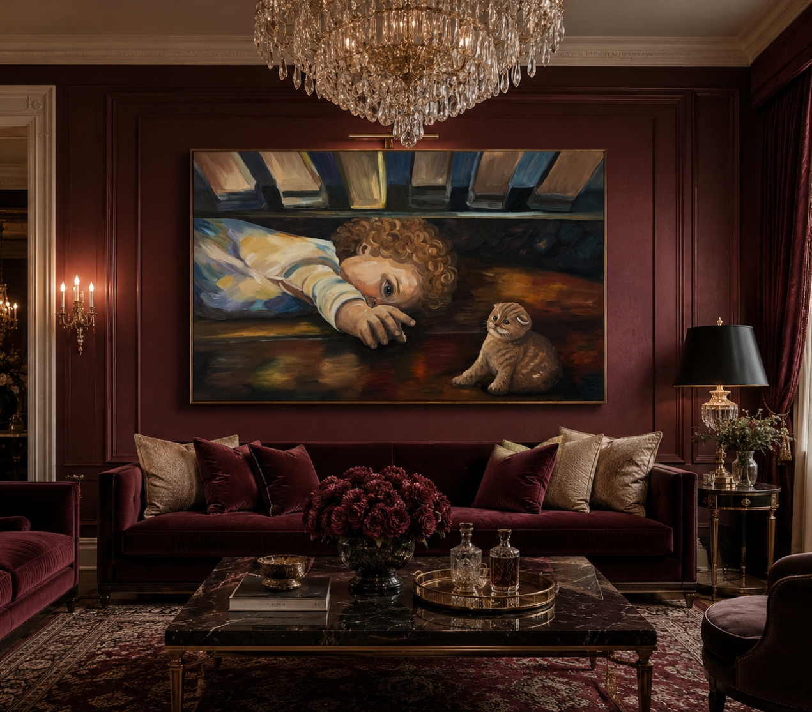
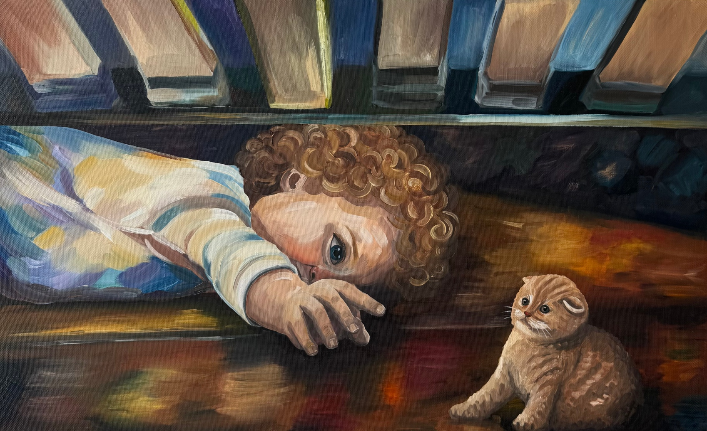

Холст на подрамнике, Лён
Масло
80 х 50 см.
Это один из тех моментов детства, когда весь мир может сузиться до одного маленького события. В этой работе мне хотелось запечатлеть яркие, позитивные эмоции и напоминание о времени, когда самые простые вещи казались чудом.
Я использовала свободную, живописную манеру письма с выразительными мазками и палитрой теплых коричневых, золотистых и глубоких синих оттенков. Свет и цвет не только формируют пространство, но и передают эмоциональное состояние героев.
Эта картина передает ощущение тихого, почти сказочного момента встречи двух миров — детского любопытства и беззащитности маленького животного.
Она напоминает о времени, когда мир открывался через простое наблюдение, а маленькая встреча могла казаться целым событием.
